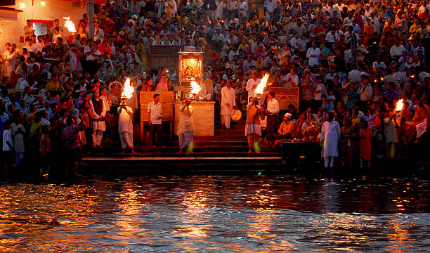

Select your preferred language
You can change it anytime using the language icon at the top-right.
Pilgrimage Travel Survey
Namaskar 🙏 We are researchers at Indian Institute of Technology Roorkee (IIT Roorkee) studying how pilgrims travel to the Himalayan shrines of Uttarakhand: Kedarnath, Badrinath, Gangotri, Yamunotri and Hemkund Sahib. This survey seeks to understand your travel experiences and difficulties, and your views on new transport developments, such as trains, ropeways and better services. Your answers will help us identify ways to improve pilgrimage travel.
Why this survey?
🛣️Find where the journey is hard, costly or slow: long waits, many vehicle changes, tough treks
🚆 🚡Learn which new options pilgrims want, such as trains, ropeways and better services
🏛️Help plan safer, cheaper and more comfortable yatras in future
What's inside
- 👤About youage, group, home state
- 🧭Your journeyroute, modes, time, cost, stay
- ⚖️Pick your optionchoose between travel options
- 💬Your viewspriorities and suggestions
⏱️ 5–8 min
🙋 Voluntary
🔒 Academic research only
By clicking "I Accept and Agree" you consent to take part.
How to fill this survey
Tap an answer to select it. For questions that say “select all that apply”, you can choose more than one answer.
- 🌐
Choose your languageUse “Select your preferred language” above. On later pages, tap the language icon at the top-right to change it.
- ✓
Agree to take partRead the introduction, then tap “I Accept and Agree” to begin.
- ✎
Answer one page at a timeTap “Next” to continue or “Previous” to check an earlier answer. Some questions appear only when they apply to your journey.
- 📤
Submit your answersOn the last question page, tap “Submit Response” and wait for the confirmation page.
For travel choice cards, compare the options and choose one per question. For ratings, select one number using the meanings shown beside the scale.
What is on each page?
- Your trip: travel group, shrines and visit order.
- Travel between places: vehicles, time, cost and stops.
- At the shrine: travel to the shrine and accommodation.
- Travel choices: compare options for reaching the shrine or nearby town.
- Travel to the shrine: compare walking, assisted travel or ropeways, where applicable.
- Trains and ropeways: your views and willingness to use them.
- Travel priorities: rate what matters to you from 1 to 5.
- About you: age, gender, home state and other basic details.
- Your feedback: journey rating, problems faced and suggestions.
There are 9 question pages after the introduction. Pages or questions that do not apply may be empty; use Next to continue.
If an answer is missing, it is marked red. Complete it correctly and it turns green. On a small screen, swipe sideways inside wide rating tables to see all options.
Page 8 of 9 · ~2 min
Section E: Respondent Profile & Demographics
These details are collected near the end to help analyze travel patterns across different pilgrim groups. Your responses will be used only for academic research and planning purposes, and will not be shared publicly.
E1: Basic Demographic Characteristics
📍
Fetching location…
Page 1 of 9 · ~3 min
Section A: Current Travel Behaviour
A1: Travel Group Characteristics
Count everyone in your travel group, including you. We ask separately how many people were in your vehicle in A4.1.
A1.1: Trip Planning & Booking
A2: Visit History & Frequency
For each shrine, mark how many times you visited before and whether it is included in this trip. Click a selected previous-visit number again to clear it.
Progress of your ongoing trip
For each shrine included in this trip, indicate whether it is completed, currently underway, or planned next.
A3: Your travel route and order of shrine visits
Order of Shrine Visits
Select Shrines in A2 to show visit-order fields.
Page 2 of 9 · ~4 min
Section A (continued): Your Journey Details
A4: Transportation Mode Choice
A4.1 Travel to the first shrine or nearby town
Enter the main travel route, mode, time, and cost for each segment of your onward journey (start point → Shrine base/destination). If your trip is ongoing or planned, enter the mode you intend to use.
Vehicle types: Shared = you pay for your seat; Hired = your group books the whole vehicle; Own = your personal or family vehicle. First select whether the vehicle changed on this route.
Enter the one-way amount paid and use “What does this fare cover?” to identify what that amount covers. Enter ₹0 if there was no separate fare because transport was included in a package. Do not include accommodation or food.
| Shrine |
Route/Segment |
Vehicle changes on this route |
Vehicle used at the start of this route |
One-Way Time (hrs) |
One-Way Fare (₹) |
What does this fare cover? |
Action |
Transfer Details
For each change, enter the transfer location and details of the vehicle used from that point onward. Time and fare should cover the journey from this transfer point to the next transfer or the first shrine base. If there were more than three transfers, enter the first three.
| Transfer |
Intermediate Transfer Location |
Mode After Transfer |
Time After Transfer (hrs) |
Fare After Transfer (₹) |
What does this fare cover? |
People travelling in the vehicle |
A4.1a Travel between shrines
For each journey after your first shrine, enter travel details from the previous base to the next. Enter the vehicle type, travel time, and fare details for each route.
Enter the one-way amount paid and state what that amount covers. Enter ₹0 if transport was included in a package. For an ongoing or planned trip, enter your best estimate.
| Route/Segment |
Vehicle changes on this route |
Vehicle used at the start of this route |
One-Way Time (hrs) |
One-Way Fare (₹) |
What does this fare cover? |
People travelling in the vehicle |
A4.1b Return Journey (Shrine → Start Point)
If you took a different mode on your return, enter it below. If return mode and cost were the same as onward, select "Same as onward journey."
A4.1c Stops for food, rest or overnight stay
Tell us where you stopped for food, rest or an overnight stay on the way. Location options are filtered for each selected shrine. Add approximate cost if paid.
| Route/Segment |
Where did you stop? |
Why did you stop? |
How long did you stop? |
Type of place |
Amount paid |
Action |
* Planned next: choose a prebooked arrangement to enter known details; otherwise stopover questions are skipped.
Your onward journey
Select your starting point, shrine order, and travel mode to build the route.
Page 3 of 9 · ~3 min
Section A (continued): Travel to the shrine and your stay
A4.2 Last-Mile Travel (Base Camp / Road-head → Shrine)
Tell us how you travelled from the nearby town or end of the road to each shrine. For Kedarnath, first choose whether you travelled through Sonprayag/Gaurikund or flew from a helipad. For Hemkund Sahib, give details for each part of the journey: Govindghat → Pulna, Pulna → Ghangaria, and Ghangaria → Hemkund Sahib. If your trip is ongoing or planned, enter your intended mode.
| Shrine |
Route/Segment |
Mode Used / Intended |
One-Way Time (hrs) |
Cost per Person, One-Way (₹) |
A4.2a Return Last-Mile Journey (Shrine → Base/Road-head)
For each selected shrine, indicate whether your return from the shrine used the same mode and cost. Enter separate details only when it was different.
A5: Accommodation & Duration (at the shrine / nearby stay location)
For each selected shrine, record your stay duration, accommodation, and approximate cost. For Hemkund Sahib, record accommodation at Ghangaria, the overnight base before or after the shrine visit.
| Shrine / Stay location |
Shrine stay duration |
Accommodation Type |
Total Accommodation Cost (₹) |
| <8 hrs |
8–12 hrs |
12–18 hrs |
18–24 hrs |
>24 hrs |
Would you go on this pilgrimage again in the coming years?
Your shrine approach
Select a last-mile mode to build the route.
See whole trip
Enter your travel details to see your whole trip.
Page 4 of 9 · ~5 min
Section B: Main-Haul Choice Experiment
📋 Before you begin
- Today: most pilgrims go from Rishikesh / Haridwar to the shrine base by bus or taxi on long hill roads.
- New option: the Rishikesh–Karnaprayag Railway (125 km, expected around 2028), then a feeder bus or taxi to the shrine base. It does not serve Yamunotri or Gangotri, so those shrines have no railway cards.
- Each card shows: one-way cost per person and total time to the shrine base (including waiting and the feeder), plus comfort, reliability and vehicle changes.
- Your task: imagine the railway is already running. Pick the option you would actually choose.
📋 Before you begin: Hemkund Sahib
- Today: Rishikesh / Haridwar → Govindghat is a long hill-road journey by bus or taxi.
- New option: the Rishikesh–Karnaprayag Railway (125 km) is being built and is expected around 2028. You would take the train to Karnaprayag, then a feeder bus or taxi to Govindghat via Chamoli and Joshimath.
- Each card shows: one-way cost per person and total time from Rishikesh / Haridwar to Govindghat (including waiting and the feeder), plus comfort, reliability and number of vehicle changes.
- Your task: imagine the railway is already running. Pick the option you would actually choose. There are no right or wrong answers.
No railway choice cards are shown for selected shrines. Please continue.
📖 Example card (not a real question)
Compare the three options and pick one. There are no right or wrong answers.
Cost₹400
Travel Time8 hrs
Comfort◔ Low
Crowded, tiring
Reliability~ Medium
Minor delays possible
Example only not selectable
Cost₹900
Travel Time6 hrs
Comfort◑ Medium
Adequate seating
Reliability✓ High
On time
Example only not selectable
Cost₹600
Travel Time4.5 hrs
Comfort● High
Spacious, relaxed
Reliability✓ High
On time
Example only not selectable
👆 Faster and comfortable, or cheaper? Choose what matters to you.
Now answer the real tasks below. Choose one option per task.
🚌 Section B1: Main-Haul Choice (Rishikesh/Haridwar → Base Camp / Shrine Destination)
📍 Kedarnath: Rishikesh → Sonprayag
📍 Badrinath: Rishikesh → Badrinath
📍 Yamunotri: Rishikesh → Janki Chatti
📍 Gangotri: Rishikesh → Gangotri
📍 Hemkund Sahib: Rishikesh → Govindghat
Page 5 of 9 · ~4 min
Section C: Last-Mile Choice Experiment
No last-mile cards are shown for selected shrines. Please continue.
📋 Before you begin: Hemkund Sahib
- Today: from Govindghat it is a steep climb of about 21 km to Hemkund Sahib (the road now reaches Pulna). Most pilgrims take two days with a night at Ghangaria, walking or using a pony, palki or pithu.
- New option: the Govindghat–Hemkund Sahib Ropeway (12.4 km) was approved by the Government of India in 2025 and is not yet running. It has two sections: Govindghat → Ghangaria and Ghangaria → Hemkund Sahib.
- Each card shows: one-way cost per person, one-way travel time, comfort (effort and shelter from weather) and reliability (whether it is available when you arrive, and the wait).
- Your task: imagine the ropeway is running on your visit. Pick the option you would actually use, given your health, group and budget.
📖 Example card (not a real question)
Compare the three ways to reach the shrine and pick one.
Cost₹0
Travel Time8 hrs
Comfort◔ Low
Steep, exposed to weather
Reliability~ Medium
Short waits at times
Example only
Cost₹3,500
Travel Time5 hrs
Comfort◑ Medium
Assisted ride, some effort
Reliability~ Medium
Short waits at times
Example only
Cost₹1,800
Travel Time0.75 hrs
Comfort● High
Seated, sheltered cabin
Reliability✓ High
On schedule, little wait
Example only
👆 Choose what matters to you.
Now answer the real tasks below. Choose one option per task.
Section C1: Last-Mile Choice (Base Camp → Temple)
📍 Kedarnath: Sonprayag/Gaurikund → Temple (Approx. 16 km)
📍 Badrinath: Badrinath Road-head → Temple (Near Road-head)
📍 Yamunotri: Barkot/Janki Chatti → Temple (Approx. 6 km)
📍 Gangotri: Uttarkashi/Harshil → Temple (Near Road-head)
📍 Hemkund Sahib: Govindghat → Hemkund Sahib (about 21 km)
Most important factors for integrated services (rank 1–5, where 1 = Not Important, 5 = Very Important):
Page 6 of 9 ? ~2 min
Railway & Aerial Ropeway Acceptance
D2: Your views on travelling by train
1 = strongly disagree, 5 = strongly agree.
D2a: One ticket for the whole journey
D2b: Waiting for a bus or taxi after the train
After reaching Karnaprayag by train, you need a connecting bus or shared taxi to continue towards the shrine. How long would you wait before arranging another vehicle?
D2c: Willingness to Pay for Railway
D3: Ropeway Acceptance
1 = strongly disagree, 5 = strongly agree.
D3a: Willingness to Pay for Ropeway
What is the maximum amount per person you would be willing to pay for ropeway at Kedarnath (one-way)?
D3b: What Would Drive You to Choose Ropeway?
Select all factors that would make you prefer ropeway over trekking or traditional modes at the shrine:
Page 7 of 9 · ~3 min
Section D: Travel Priorities & Preferences
D0: What Matters to You When Choosing Transport?
Think about this pilgrimage journey specifically. How important is each factor when deciding how to travel to or from the shrine? 1 = not important at all, 5 = very important.
Page 9 of 9 · ~1 min
Section F: Feedback & Suggestions
Move the slider to rate
1
10
12345
678910
😞 Very Poor
😐 Average
😊 Excellent
Thank You! 🙏

आपकी यात्रा मंगलमय हो
Your response has been saved and is invaluable to our research.